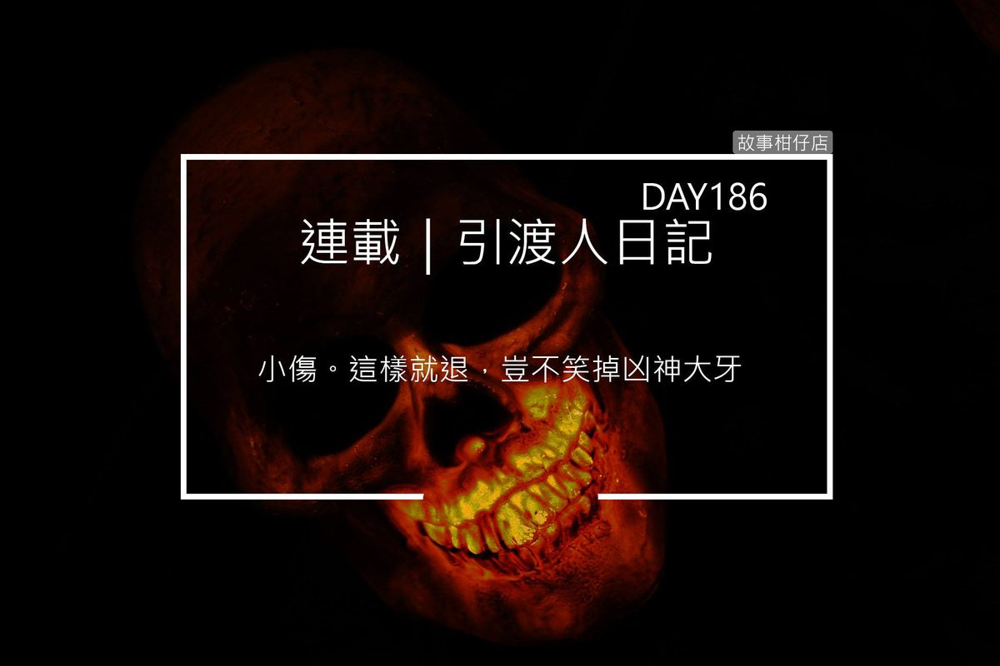

引渡人日記 day186（九）只是當時已惘然

甘柳將軍一行人與黑哥白姐談著剩餘凶神的兵力，我走在他們身後，揹著相思弩，揣著杯盞，像個陌路人。
途經一片參天高的樹林，林中忽有響動，霎時所有人豎起耳朵，提高戒備，黑哥更屏氣凝神摘下草帽，準備發動攻勢。
踩踏枯葉的聲響一晃眼從遠到近，這速度也太快了些！大夥不敢掉以輕心，一雙雙眼睛全盯著林子深處。
聲響的主人終於穿過草叢鑽出林子，哎呀，居然是隻銀灰色兔子。
兔子渾身圓滾，毛色光亮，睜著水汪汪眼睛，不解看著眼前陣仗。
「哈！居然是兔子！沒事沒事！」黑哥爽朗笑道，氣氛頓時鬆懈下來。
奇怪的是，那兔子並不怕人，前腳撓撓臉頰，轉身翹起圓呼呼屁股，一跳一跳躍到一棵香絲樹旁，然後就不走了。
其實全天下的兔子不都長得一樣？可我無端覺得牠面熟。
我蹲了下去，掌心拂過牠柔順毛皮，牠瞇起眼睛很享受似的，一雙長長的耳朵動了動。
起身要走，那兔子仍圍著樹幹旁跳呀跳。我又蹲下去，在樹旁挖了個小洞，將冬無眠留下的杯盞埋進去。
百憂沒吃著兔子，但我見到兔子了。
「阿白，妳的傷愈來愈重，不如先回第二殿，我與枷鎖將軍們直往第五殿去。」
「小傷。這樣就退，豈不笑掉凶神大牙？」
黑哥白姐的對話被馬的嘶鳴打斷，隨即而來是一陣響徹雲霄的豪邁笑聲：
「什麼大牙？他們還有金牙哩！」
原來是鍾馗！他邊仰頭喝酒，手輕拉韁繩，馬匹腳步放慢速度，馬背垂下一左一右兩顆圓球，後頭跟著的五個小鬼，也一起哈哈大笑。
鍾馗捧起其中一顆圓球，笑道：
「你們瞧！我可沒胡言亂語，這嘴裡可不是一整排金牙嗎？！」
那圓球原來是首級，兩撇眉毛如倒放的掃把，一對三白眼直勾勾往上吊，扭曲咧開的嘴露出亮晃晃金牙。一見他，我便認出他是霾晦。
不用看，另一顆圓球肯定是在鬼門關被收拾的雨曝。
「將軍，方才我們解決了兩凶神，現在地府裡應該只剩落雷，你在後頭沒見到嗎？」白姐匆匆看我一眼，不知是什麼意思。
「這傢伙在第九殿被我收拾的，我走經八七六殿可都沒見著落雷，才剛想往第五殿去哩！」鍾馗拎著霾晦首級，像甩著球玩似的。
「八七六殿都沒有？那為何鬼哭神嚎、烽火連天？」
「都是些冤魂厲鬼作祟罷咧！凶神老大廣開地獄門救兄弟，不就一併把犯魂放出來了？造孽！」
「那麼最後一個凶神應是在第五殿了。會押在第五殿，這凶神恐怕非同小可。」
「哦？那老子更要看看他是圓是扁，讓我七星劍掂掂斤兩。」
既然目的地相同，自然大家是一塊去的了，甘柳將軍一行人則前往八七六殿平亂。我依舊落在隊伍後頭，眼見第五殿就在前方，身後那株香絲樹愈顯得模糊了，模糊到我已經無法從那一整片林子找出那棵樹。
第五殿的氣氛是最詭異的了，屋瓦上方暈著揉雜了七色的邪光，一圈圈擴散出去，蔓延到天邊，混濁又晦暗，籠罩著大殿。
白姐一馬當先闖了進去，只見七色鬼與紫衣還有一小群惡鬼冤魂正在殿中與精兵部隊戰得難分難捨，審判桌椅全被掀翻在地，樑柱給刀斧砍出好幾條口子，連閻羅天子特地挑選的雲絲布幔都給扯爛在地任人踩踏。
幸好，大殿門口雖沒守住，但各地獄門仍關得緊緊的，還未淪陷。
「閻羅天子訓練得不錯啊，擋了這麼久！」鍾馗自馬背一躍而下，舉起七星劍，大步往混戰中邁去，一副鬼擋殺鬼、佛擋殺佛的態勢，轉頭便道：「小鬼們，哪些個雜魚惡鬼，就交給你們。」
說時遲，那時快，小鬼前腳剛走，七色鬼便圍住了鍾馗，鬼哭狼嚎地準備上前啃咬。只見鍾馗一手七星劍擋住迎面而來的三副利牙，一手紙扇化開後頭來的四雙骨爪。
「看來有兩下子，這七色小狗我先陪他們玩玩，黑白無常還有那個開門的小哥，就先去擋一下那個紫色衣服的邪物，我速速就來！」
在那片刀光劍影、鏗鏗鏘鏘之中，紫衣正擋下一記刀劈，順勢迴身扭折了對手的臂。那傷兵放聲哀號起來，紫衣牢牢絞著他的手，那雙黑窟窿似的眼睛望向這邊，嘴角一路咧到耳邊，樂呵呵的，在笑。